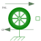

RollingResistanceResistance of a rolling wheel |

|
Information
This information is part of the Modelica Standard Library maintained by the Modelica Association.
Simplified model of the resistance of a rolling wheel, dependent on vertical wheel load (due to gravity, i.e. static only), inclination and rolling resistance coefficient:
flange.f = Cr * fWeight * cos(alpha)
The rolling resistance coefficient Cr is either constant
(given by the parameter CrConstant)
or prescribed by the input cr.
The inclination is either constant (parameter inclinationConstant)
or prescribed by the input inclination.
This corresponds to the road rise over running distance of 100 m which,
in general, is written as a percentage and is equal to tan(α).
For example for a road rising by 10 m over 100 m the
grade = 10 % and, thus, the inclination is 0.1.
Positive inclination means driving uphill, negative inclination means
driving downhill, in case of positive vehicle velocity.
Note
The rolling resistance is independent of velocity here,
but changes its direction with the direction of velocity.
To avoid numerical problems around zero velocity, the rolling
resistance is regularized accordingly within [-v0, v0].
Therefore static friction at vehicle's standstill
is not taken into account.
Parameters (8)
| useSupport |
Value: false Type: Boolean Description: = true, if support flange enabled, otherwise implicitly grounded |
|---|---|
| fWeight |
Value: Type: Force (N) Description: Wheel load due to gravity |
| useCrInput |
Value: false Type: Boolean Description: Enable signal input for Cr |
| CrConstant |
Value: 0.01 Type: Real Description: Constant rolling resistance coefficient |
| useInclinationInput |
Value: false Type: Boolean Description: Enable signal input for inclination |
| inclinationConstant |
Value: 0 Type: Real Description: Constant inclination = tan(angle) |
| reg |
Value: Modelica.Blocks.Types.Regularization.Exp Type: Regularization Description: Type of regularization |
| v0 |
Value: 0.1 Type: Velocity (m/s) Description: Regularization below v0 |
Connectors (4)
Used in Components (1)
|
Modelica.Mechanics.Translational.Components Simple vehicle model |